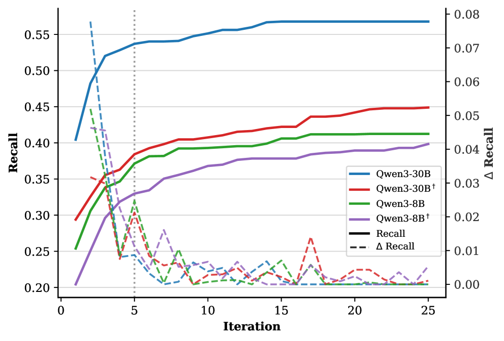
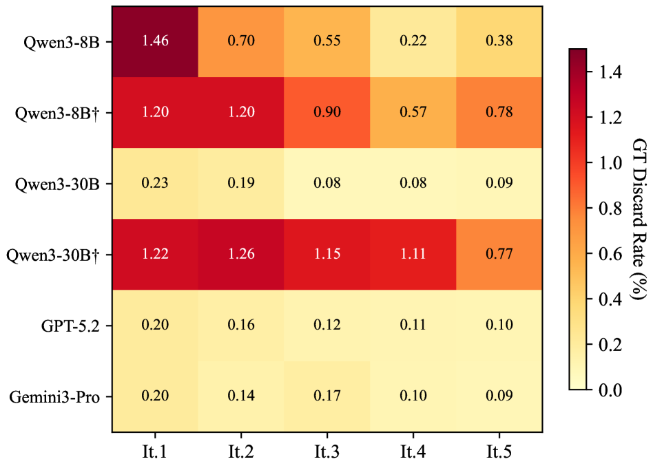

ScholarGym: Benchmarking Large Language Model Capabilities in the Information-Gathering Stage of Deep Research
Abstract
Large language models have advanced from single-turn question answering to deep research systems that iteratively decompose research questions, invoke retrieval tools, and synthesize information across multiple rounds. Evaluating such systems typically involves scoring their final research reports holistically, but this end-to-end paradigm tightly couples the language model’s decision-making, workflow design, and environmental feedback, precluding decomposable analysis of individual components.
We introduce ScholarGym, an evaluation environment that isolates the information-gathering stage of deep research on academic literature. Under a unified workflow, ScholarGym decomposes the research process into three explicit stages—Query Planning, Tool Invocation, and Relevance Assessment—and evaluates each against 2,536 expert-annotated queries over a static corpus of 570K papers with deterministic retrieval. Systematic experiments reveal that iterative query decomposition yields 2.9–3.3× F1 gains over single-query retrieval, models with extended thinking trade recall for precision, and Query Planning quality together with Relevance Assessment constitute dual bottlenecks that separate proprietary from open-source model performance.
Deep Research Workflow
ScholarGym evaluates the information-gathering stage through an iterative loop with three explicit stages. In Query Planning, the agent proposes and refines subqueries using actions such as Derive, Expand, and Continue. In Tool Invocation, each subquery is executed with either BM25 sparse retrieval or dense retrieval (Qwen3-Embedding-0.6B + Qdrant) over a static literature corpus. In Relevance Assessment, the model filters candidates through abstract-only screening or adaptive browsing.
To support long-horizon reasoning, the workflow maintains a subquery tree for query lineage and an experience buffer for compressed progress memory across iterations.
Benchmark & Dataset
ScholarGym is built from PaSa and LitSearch with two released components:
- scholargym_bench.jsonl: 2,536 expert-annotated research queries
- scholargym_paper_db.json: 570K-paper static corpus with deterministic retrieval
| Subset | #Queries | Avg. #GT | Avg. Length |
|---|---|---|---|
| Test-Fast | 200 | 1.9 | 113.0 |
| Test-Hard | 100 | 2.6 | 101.8 |
| ALL | 2,536 | 2.3 | 110.4 |
Evaluation Metrics
- Recall (R), Precision (P), and F1 for final selected papers.
- Ret.R and Ret.P for retrieval quality before relevance filtering.
- Avg.Distance to evaluate query planning quality (how early ground-truth papers appear).
- GT Discard Rate to measure mistaken removal of ground-truth papers during filtering.
Main Results
| Model | R | P | F1 |
|---|---|---|---|
| Qwen3-8B (Direct) | 0.185 | 0.042 | 0.069 |
| Qwen3-30B (Direct) | 0.312 | 0.058 | 0.098 |
| Qwen3-8B | 0.483 | 0.152 | 0.231 |
| Qwen3-30B | 0.673 | 0.181 | 0.285 |
| Qwen3-30B† | 0.482 | 0.290 | 0.362 |
| GLM-4.7 | 0.754 | 0.111 | 0.194 |
| DeepSeek-V3.2 | 0.855 | 0.135 | 0.233 |
| DeepSeek-V3.2† | 0.812 | 0.287 | 0.423 |
| GPT-5.2 | 0.837 | 0.305 | 0.447 |
| Gemini3-Pro | 0.950 | 0.199 | 0.329 |
† indicates extended thinking mode.


Key Findings
The study shows that iterative query planning substantially outperforms direct-query baselines, yielding roughly 2.9–3.3× gains in F1. It also reveals a recurring trade-off in extended thinking mode, which often improves precision while reducing recall. Across model families, Query Planning and Relevance Assessment emerge as dual bottlenecks, and the memory mechanism is consistently beneficial: ablating memory can reduce F1 by around 6–22% depending on model and setup.
Quick Use
# Clone
git clone https://github.com/shenhao-stu/ScholarGym.git
cd ScholarGym
# Create env
conda create -n scholargym python=3.10
conda activate scholargym
pip install -r requirements.txtBibTeX
@misc{shen2026scholargymbenchmarkinglargelanguage,
title={ScholarGym: Benchmarking Large Language Model Capabilities in the Information-Gathering Stage of Deep Research},
author={Hao Shen and Hang Yang and Zhouhong Gu and Weili Han},
year={2026},
eprint={2601.21654},
archivePrefix={arXiv},
primaryClass={cs.AI},
url={https://arxiv.org/abs/2601.21654}
}